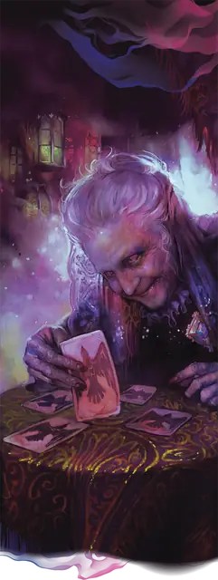

Мадам Ева
Madam Eva
Средний Гуманоид (Человек), Хаотичный Нейтральный, именной НИП

Класс Защиты 15 Инициатива +4 (14)
Хиты 117 (18к8 + 36)
Скорость 30 футов
| мод | спас | ||
|---|---|---|---|
| СИЛ | 8 | −1 | −1 |
| ЛОВ | 11 | +0 | +0 |
| ТЕЛ | 14 | +2 | +2 |
| мод | спас | ||
|---|---|---|---|
| ИНТ | 17 | +3 | +3 |
| МДР | 20 | +5 | +9 |
| ХАР | 18 | +4 | +8 |
Чувства пассивное Восприятие 19
Языки Общий, Бездны, Инфернальный, Эльфийский
Опасность 10 (5 900 опыта; БВ +4)
Особенности
Сопротивление магии. Мадам Ева совершает с Преимуществом спасброски от заклинаний и прочих магических эффектов.
Действия
Мультиатака. Мадам Ева совершает три атаки Проклятым кинжалом или Пылким светом в любой комбинации.
Проклятый кинжал. Бросок рукопашной атаки: +9, досягаемость 5 фт. Попадание: 10 (2к4 + 5) Колющего урона плюс 21 (6к6) Некротического урона.
Пылкий свет. Бросок дальнобойной атаки: +9, дистанция 60 фт. Попадание: 21 (3к10 + 5) урона Излучением, и цель Ослеплена до начала следующего хода мадам Евы.
Видения конца времён (Перезарядка 5–6). Спасбросок Мудрости: Сл 17, все существа в 20-футовой Сфере с центром в точке, видимой мадам Евой в пределах 120 футов. Провал: 24 (7к6) Некротического урона плюс 24 (7к6) Психического урона, и цель Испугана до начала следующего хода мадам Евы. Успех: Только половина урона.
Сотворение заклинаний. Мадам Ева сотворяет одно из следующих заклинаний (заклинательная характеристика — Мудрость, Сл спасброска заклинаний 17):
Неограниченно: Починка, Свет, Чудотворство
2/день каждое: Рассеивание магии, Снятие проклятия
1/день каждое: Возвращение к жизни, Высшее восстановление, Духовные стражи, Наблюдение
Бонусные действия
Дурной глаз (2/день). Мадам Ева сотворяет Удержание личности (заклинательная характеристика — та же, что для Сотворения заклинаний).
Бонус мастерства +4
Мадам Ева
Двуличная прорицательница
Загадочная предсказательница мадам Ева окутывает себя тщательно сплетённой паутиной лжи. На вид ей можно дать лет семьдесят, но она гораздо старше. Она всегда держится особняком, ревниво оберегая тайны своего происхождения и многовековых замыслов.
Мадам Ева — легендарная фигура, известная во всех Туманных землях. Мало кто сравнится с ней в искусстве толковать знамения, читать карты тарокка или подчинять духов во время спиритических сеансов. Предсказания, которые она даёт, могут иметь двойной смысл, но ошибочными они не бывают никогда. Она славится умением подсказать, когда лучше шагнуть в Туманы, чтобы покинуть домен или добраться до нужного места, и многие путники ищут её на берегах озера Цер в Баровии, надеясь на её откровения. Она часто намекает, что знает тайны Туманов, а также истории и уязвимые места Тёмных властелинов, и не прочь поделиться этими знаниями — за определённую цену. Мадам Ева злопамятна и обычно раскрывает секреты лишь тем, кто сперва окажет ей услугу. Всё, что ей становится известно, вскоре может узнать и Тёмный властелин Баровии, с которым её связывают вековые узы.